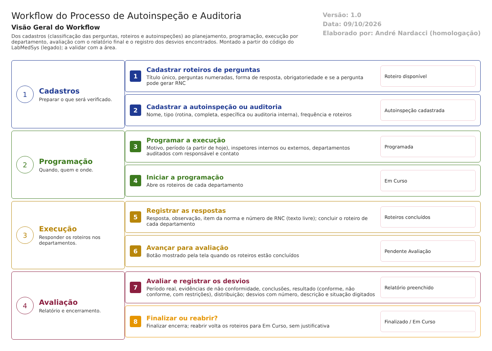

Objetivo
Este documento descreve o fluxo de autoinspeção e auditoria da qualidade no LabMedSys. Vai dos cadastros (classificação das perguntas, roteiros e autoinspeções) ao planejamento anual, à programação de cada execução, ao registro das respostas em cada departamento, à avaliação com o relatório final e ao registro dos desvios encontrados.
Foi montado a partir do código do sistema legado. O que depende da prática da área está marcado como a validar. Os casos de teste estão no fim.
Escopo
- Cadastro Tipo Qualificação, Cadastro de Roteiro e Cadastro Autoinspeção e Auditoria.
- Planejamento de Autoinspeção e Auditorias (relatório).
- Programação, início, cancelamento.
- Registro das respostas por departamento.
- Avaliação, desvios da auditoria, finalização e reabertura.
Fora do escopo: o tratamento dos desvios encontrados, que deveria seguir o fluxo de desvios e CAPA (desvios-capa.md) e não segue (ponto de atenção 2); e a qualificação de fornecedores, que não tem tipo de auditoria próprio (ponto de atenção 4).
Nomes das telas: como aparecem no menu ou no alto de cada tela. Os caminhos de código são relativos a 5.garantia_qualidade/app/. Para encurtar: Bloco2/ quer dizer HSolutions.GQ.UI/Areas/Bloco2/Controllers/, Service/ quer dizer HSolutions.GQ.Domain/Service/ e Helpers/ quer dizer HSolutions.GQ.UI/Helpers/.
Visão geral do processo

A Garantia da Qualidade mantém roteiros, que são listas de perguntas, e cadastra cada autoinspeção ou auditoria: o tipo, a frequência e os roteiros que usa. O Planejamento mostra o calendário. Para cada execução, a GQ faz uma programação: o motivo, o período, os inspetores (internos ou externos) e os departamentos auditados, cada um com um responsável e um contato.
Ao iniciar, cada departamento recebe seus roteiros. As respostas são registradas pergunta a pergunta, com observação, item da norma e, quando há não conformidade, o número de um RNC. Concluídos os roteiros, a programação vai para avaliação: a GQ registra o período real, as evidências, as conclusões, o resultado e a lista de desvios, e finaliza. A avaliação pode ser reaberta, devolvendo os roteiros para preenchimento.
Situações da programação (como aparecem na tela):
| # | Situação | Próximo passo | Tela |
|---|---|---|---|
| 1 | Programada | Iniciar, editar ou cancelar | Programação Autoinspeção e Auditoria |
| 2 | Em Curso | Registrar respostas e avançar | Registro Autoinspeção e Auditoria |
| 3 | Pendente Avaliação Auto inspeção e Auditoria | Avaliar, finalizar ou reabrir | Avaliação Autoinspeção e Auditoria |
| 4 | Finalizado | — (fim) | — |
| — | Cancelado | — (fim), só a partir da situação 1 | Programação Autoinspeção e Auditoria |
Descrição funcional das etapas
"A numeração das regras de negócio é reiniciada em cada atividade, visando facilitar sua identificação e manutenção."
Cadastros
Regras de negócio
- RN001 – Cadastro Tipo Qualificação: sigla, descrição e observação. Serve para classificar as perguntas dos roteiros (
HSolutions.GQ.Domain/Entities/Bloco2/AutoInspecaoAuditoriaQualidade/TipoQualificacao.cs). A validar que classificação a área usa (por exemplo, crítico, maior e menor). - RN002 – Cadastro de Roteiro: o título não pode repetir ("Título do Roteiro já existe",
Bloco2/CadastroRoteiroController.cs:544). Cada pergunta tem número, título, qualificação, forma de resposta (texto curto, texto longo, seleção única ou múltipla), se a resposta é obrigatória, se tem campo de observação e se pode gerar RNC (HSolutions.GQ.Domain/Entities/Bloco2/AutoInspecaoAuditoriaQualidade/Pergunta.cs). - RN003 – Excluir um roteiro o manda para a lixeira (exclusão lógica), sem histórico (
CadastroRoteiroController.cs:600-613). - RN004 – Cadastro Autoinspeção e Auditoria: nome, tipo e frequência obrigatórios (
Service/AutoInspecaoAuditoriaQualidadeValidator.cs:25a:39). Os tipos que a tela mostra são Autoinspeção de rotina, Autoinspeção completa, Autoinspeção específica e Auditoria interna (HSolutions.GQ.Domain/Enumeradores/TipoAuditoria.cs). A frequência vai de mensal a anual, eventual ou única.
Telas do sistema
| Módulo | Tela | Finalidade |
|---|---|---|
| Garantia da Qualidade | Cadastro Tipo Qualificação | Classificação das perguntas |
| Garantia da Qualidade | Cadastro de Roteiro | Roteiros de perguntas |
| Garantia da Qualidade | Cadastro Autoinspeção e Auditoria | Autoinspeções e seus roteiros |
| Garantia da Qualidade | Planejamento de Autoinspeção e Auditorias | Relatório do planejamento |
Programação
Regras de negócio
- RN001 – Obrigatórios: nome da versão, motivo (planejada, recolhimentos, rejeições repetidas de produtos, inspeção sanitária ou outro, este com descrição), período e pelo menos um departamento auditado (
Service/ProgramacaoAutoInspecaoAuditoriaQualidadeValidator.cs:26a:95). - RN002 – O período não pode começar nem terminar antes de hoje, e o início não pode ser depois do fim (
ProgramacaoAutoInspecaoAuditoriaQualidadeValidator.cs:64a:77). Também registra o período e o motivo da última inspeção e a referência bibliográfica. - RN003 – Inspetores: internos (usuários) ou externos (com a empresa). A regra que exigia um coordenador está desligada (
ProgramacaoAutoInspecaoAuditoriaQualidadeValidator.cs:99, comentada). - RN004 – Cada departamento auditado tem um responsável e um contato. Uma checagem exige que o contato seja um auditor cadastrado ("Necessário ao menos um Inspetor/Auditor interno por Roteiro"). Mas, do jeito que foi escrita, ela não roda para o primeiro roteiro verificado (
Bloco2/ProgramacaoAutoInspecaoAuditoriaQualidadeController.cs:684-728). A confirmar no teste. - RN005 – Não há regra de independência: nada impede que o inspetor seja da área auditada (RDC 658/2022, art. 363).
- RN006 – Só se edita e cancela em Programada (
HSolutions.GQ.UI/Areas/Bloco2/Models/ProgramacaoAuditoriaInspecaoIndexModel.cs:52). A trava existe só na lista: a gravação da edição volta a situação para Programada (ProgramacaoAutoInspecaoAuditoriaQualidadeController.cs:368), e o cancelamento não confere a situação (:327-340). - RN007 – Iniciar leva a programação e os roteiros de cada departamento para Em Curso (
ProgramacaoAutoInspecaoAuditoriaQualidadeController.cs:280e:298).
Telas do sistema
| Módulo | Tela | Finalidade |
|---|---|---|
| Garantia da Qualidade | Programação Autoinspeção e Auditoria | Programar, iniciar e cancelar |
Registro das respostas
Regras de negócio
- RN001 – Registram as respostas: o contato do departamento (o inspetor), o responsável pelo departamento auditado e o nível 3 (
Helpers/GerenciadorAcessoTelaRegistroResultadoIndex.cs). Ou seja, a própria área auditada pode preencher e alterar o resultado da sua auditoria (ponto de atenção 3). - RN002 – Cada resposta guarda a descrição, a observação, o item da norma e o RNC. O RNC é um texto livre (
HSolutions.GQ.Domain/Entities/Bloco2/AutoInspecaoAuditoriaQualidade/Resposta.cs:16), sem ligação com o Relatório de Desvios. - RN003 – O roteiro de cada departamento é concluído e pode ser reaberto (
Bloco2/RoteiroController.cs:50e:119). - RN004 – Avançar para avaliação leva a programação a Pendente Avaliação (
Bloco2/RegistroResultadoController.cs:273). O botão só aparece quando os roteiros estão concluídos (HSolutions.GQ.UI/Areas/Bloco2/Script/RegistroResultadoEditar.js:63-66), mas o servidor não confere (RegistroResultadoController.cs:263-275).
Telas do sistema
| Módulo | Tela | Finalidade |
|---|---|---|
| Garantia da Qualidade | Registro Autoinspeção e Auditoria | Responder os roteiros por departamento |
Avaliação, desvios e encerramento
Regras de negócio
- RN001 – Obrigatórios: período real (não futuro), evidências de não conformidade e conclusões (
Service/AvaliacaoAutoInspecaoAuditoriaQualidadeValidator.cs:24a:49). Também registram o resultado (conforme, não conforme ou conforme com restrições), a lista de quem recebe o relatório e anexos. - RN002 – Desvios da auditoria: cada desvio tem número, descrição e situação digitados ("Nº do Desvio não foi informado!", "Descrição não foi informada!", "Situação não foi informada!",
Bloco2/AvaliacaoAutoInspecaoAuditoriaQualidadeController.cs:829-854). É um registro paralelo: não abre nem consulta um Relatório de Desvios, e a alteração de um desvio grava sem histórico (:877). - RN003 – Finalizar cria o registro da avaliação sem histórico (
AvaliacaoAutoInspecaoAuditoriaQualidadeController.cs:396) e leva a programação a Finalizado (:404). - RN004 – Reabrir devolve a programação e os roteiros para Em Curso (
:445-446), sem pedir justificativa (a alteração é gravada com justificativa vazia,:448). Só a partir de Pendente Avaliação. - RN005 – O relatório da autoinspeção pode ser impresso (
HSolutions.GQ.UI/Areas/Relatorio/Views/Bloco2/AvaliacaoAutoInspecaoAuditoria/).
Telas do sistema
| Módulo | Tela | Finalidade |
|---|---|---|
| Garantia da Qualidade | Avaliação Autoinspeção e Auditoria | Relatório final, desvios, finalizar ou reabrir |
Pontos de atenção
1. Correção do mapa de conformidade. O 04 dizia que havia auditoria do tipo "Qualidade Externa" e "Qualificação de Fornecedor". Esses nomes estão comentados no código; a tela mostra apenas autoinspeção (rotina, completa, específica) e auditoria interna. O 04 foi corrigido.
2. A auditoria não alimenta o tratamento de desvios. O número de RNC nas respostas e a lista de desvios da avaliação são textos digitados. Nada abre um Relatório de Desvios nem acompanha a correção (RDC 658/2022, art. 366: as ações tomadas depois também devem ser registradas).
3. Independência não garantida. O responsável pela área auditada pode registrar e alterar as respostas da sua própria auditoria, e nada impede que o inspetor seja da área auditada (art. 363). O coordenador da auditoria deixou de ser obrigatório.
4. Não existe auditoria de fornecedor. Não há tipo de auditoria para fornecedor nem campo para o fornecedor auditado. A empresa que aparece na programação é a do inspetor externo. O resultado não aprova nem reprova fornecedor (art. 148, XV, e art. 179).
5. Travas só na tela e registros sem histórico. A edição e o cancelamento da programação e o avanço para avaliação são controlados pela lista ou pelo botão, não pela gravação. A exclusão de roteiro, a criação da avaliação e a alteração dos desvios não deixam histórico, e a reabertura não pede justificativa.
Casos de teste
Dados: os usuários TESTE NIVEL 2 e TESTE NIVEL 3; um usuário TESTE INSPETOR cadastrado como auditor; duas áreas de teste. Todos os roteiros e autoinspeções com nome começando por TESTE.
| Caso | O que fazer | Resultado esperado |
|---|---|---|
| CT-GQ-050 | Cadastrar dois roteiros com o mesmo título | Recusa no segundo: "Título do Roteiro já existe" |
| CT-GQ-051 | Roteiro TESTE com perguntas de cada forma de resposta, uma obrigatória e uma que gera RNC |
Roteiro salvo |
| CT-GQ-052 | Abrir a lista de tipos no Cadastro Autoinspeção e Auditoria | Mostra rotina, completa, específica e auditoria interna. Registrar que não há tipo de fornecedor (ponto 4) |
| CT-GQ-053 | Programação com período começando ontem, depois com início após o fim | Recusa nas duas |
| CT-GQ-054 | Programação sem coordenador e sem departamento auditado | Recusa por falta de departamento; registrar que o coordenador não é exigido |
| CT-GQ-055 | Programação em que o inspetor é da área auditada | Pela norma, deveria impedir ou alertar. Registrar se aceitar (ponto 3) |
| CT-GQ-056 | Iniciar a programação | Em Curso; roteiros abertos por departamento |
| CT-GQ-057 | Com o responsável da área auditada, registrar e alterar respostas | Registrar se a área auditada conseguir (ponto 3) |
| CT-GQ-058 | Resposta não conforme com o número de RNC "TESTE 999", que não existe | Registrar que aceita qualquer texto (ponto 2) |
| CT-GQ-059 | Avançar para avaliação com um roteiro ainda em curso (se o botão aparecer) | Pela regra, só com roteiros concluídos |
| CT-GQ-060 | Avaliação sem evidências e sem conclusões; período real com fim amanhã | Recusa nas duas |
| CT-GQ-061 | Registrar um desvio da auditoria, alterar a descrição e consultar o histórico | Registrar se a alteração não aparecer no histórico (ponto 5) |
| CT-GQ-062 | Reabrir a avaliação | Volta para Em Curso. Registrar que não pede justificativa |
| CT-GQ-063 | Finalizar com resultado "Não conforme"; procurar um Relatório de Desvios aberto | Finalizado. Registrar que nenhum desvio foi aberto (ponto 2) |
| CT-GQ-064 | Imprimir o relatório da autoinspeção finalizada | Relatório com evidências, conclusões e desvios |
| CT-GQ-065 | Excluir um roteiro usado em programação finalizada; consultar o histórico e a programação | Registrar o efeito na programação e a falta de histórico |
Prioridade (testes por risco): CT-GQ-055, 057, 063, 061 e 052 primeiro. Eles tocam independência, tratamento de desvios, trilha de auditoria e fornecedores.